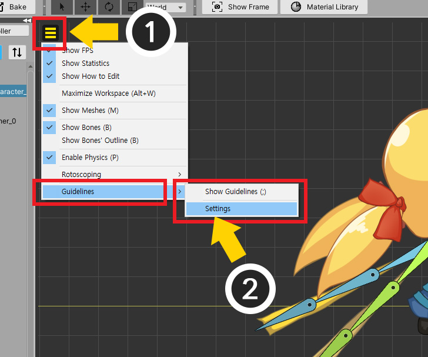
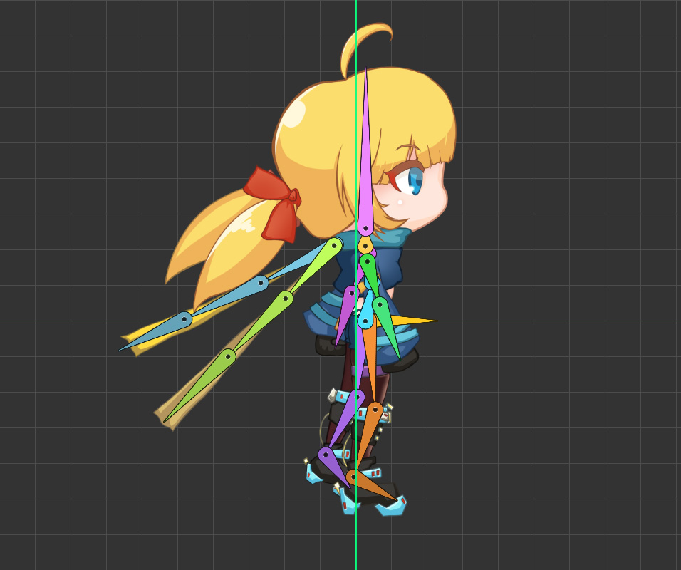
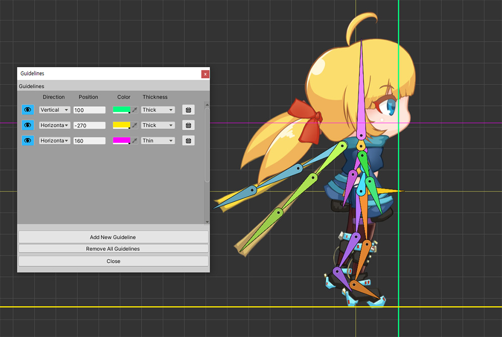

AnyPortrait > マニュアル > ガイド
ガイド
1.3.2
キャラクタアニメーションを作成しながら、「基準となる位置」が必要な場合があります。
例えば、キャラクターの足の高さを一定に置くために、「地」に対応する直線が表示されたら便利です。
このページは、これらの便宜のために開発された「ガイド（Guideline）」と呼ばれる機能を紹介します。

(1) 「表示メニュー」を開きます。
(2) 「Guidelines」メニューがあり、サブメニューには、「Show Guidelines」と「Settings」メニューがあります。
「Guidelines > Settings」をクリックします。

「ガイド」を追加することができるウィンドウが表示されます。
ここで、「ガイド」を追加または変更、または削除することができます。
(1) 「Add New Guideline」ボタンを押して、新しいガイドラインを追加します。

(2) 新しい「ガイド」が追加されました。

ガイドの設定画面の各項目は、次のとおりです。
1. 表示/非表示 : ガイドを別々に非表示にすることができます。
2. 方向と位置 : 垂直線または垂平線を設定して、位置を設定することができます。
3. 色 : ガイドの色です。
4. 太さ : 太い線と細い線の中から選択することができます。
5. 削除 : このガイドを削除します。
6. Remove All Guidelines : すべてのガイドを削除します。

まだワークスペースに見えません。
(1) 「表示メニュー」を開いて、「Guidelines > Show Guidelines」を押して有効にします。（ショートカットキー： ; ）

設定した緑のガイドがワークスペースに表示されことを見ることができます。

上記のようにガイドを追加することができます。